Pinch to zoom · turn your phone for a bigger view
A rehabilitation companion addressing a genuine NHS gap: 30–70% of patients don't complete home physiotherapy — often because they're unsure they're doing it correctly and receive no feedback between appointments. Rooted in my own experience of spinal fusion surgery and limited aftercare.
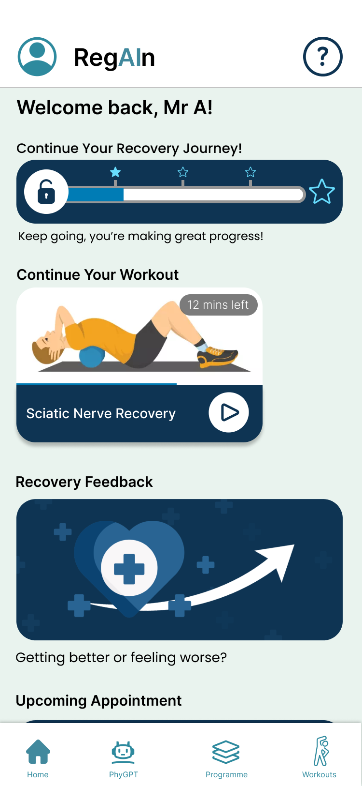
Post-operative physiotherapy is only effective when patients actually do it — and do it correctly. NHS data suggests between 30–70% of patients fail to complete their home exercise programmes, largely because they receive no feedback between appointments, aren't confident they're performing exercises correctly, and quickly lose motivation without visible progress.
This project was personal. Having undergone spinal fusion surgery, I experienced first-hand how limited the aftercare pathway is: a sheet of exercises, a follow-up appointment weeks away, and no way to know if I was helping or harming myself between visits.
The design challenge: How do we give patients the confidence to exercise independently — with the right feedback, at the right moment — without replacing the physiotherapist?
The team decided the project direction collectively, by vote. As the concept began as my idea, I took ownership of helping the wider team understand the core concept, and of addressing concerns and blockers to progress in each phase of the project.
I led UX design for the project — framing the problem, mapping the information architecture, designing the full onboarding-to-recovery user flow, and producing the wireframes that formed the basis of the group's prototype. I also supported the project manager in keeping the team aligned, and presented the final submission to academic assessors.
That ownership is best demonstrated in the working relationship I had with the UI designer. Working alongside them gave me direct experience of cross-functional handoff — and a clear lesson about what happens when vision isn't communicated precisely. Early in the project I hadn't articulated the design rationale clearly enough, which created rework. I addressed this by introducing a shared decision log and a weekly alignment session.
Before designing anything, the team set out to learn why home physiotherapy breaks down. We ran a survey, three user interviews and a literature review. I interviewed an orthopaedic surgeon with experience of physiotherapy, built the journey map, and helped turn the findings into the insights that drove the UX design.
More than half of respondents said they stop because exercises feel boring or they lose motivation. Lack of time came much lower, level with pain.
Design response: a staged programme where finishing one set of exercises unlocks the next, so recovery feels like progress rather than repetition.
“Confidence & Fear” emerged as its own theme when we grouped the findings. Most people were only somewhat confident, feared incorrect form, and avoided exercises when unsure.
Design response: real-time AR form tracking, so patients get feedback in the moment instead of waiting weeks for their next appointment.
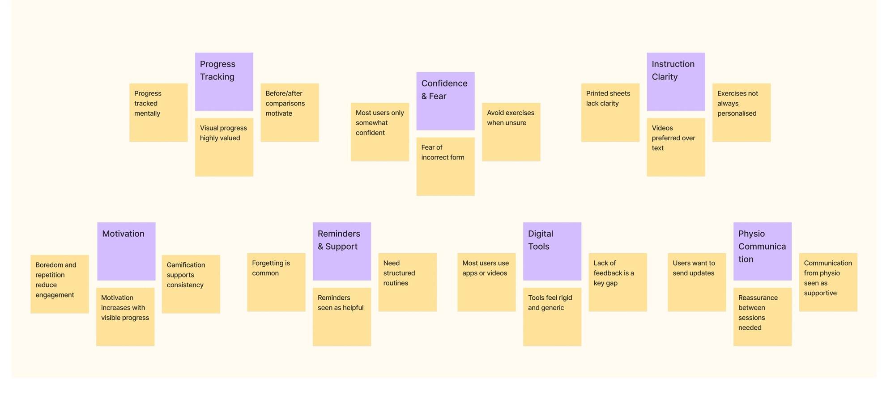
Patients say they feel motivated when they see small improvements, yet they track pain, mobility and progress mentally instead of recording it. The evidence that would keep them going is invisible.
Design response: a recovery progress bar at the top of the home dashboard, the first thing a returning patient sees.
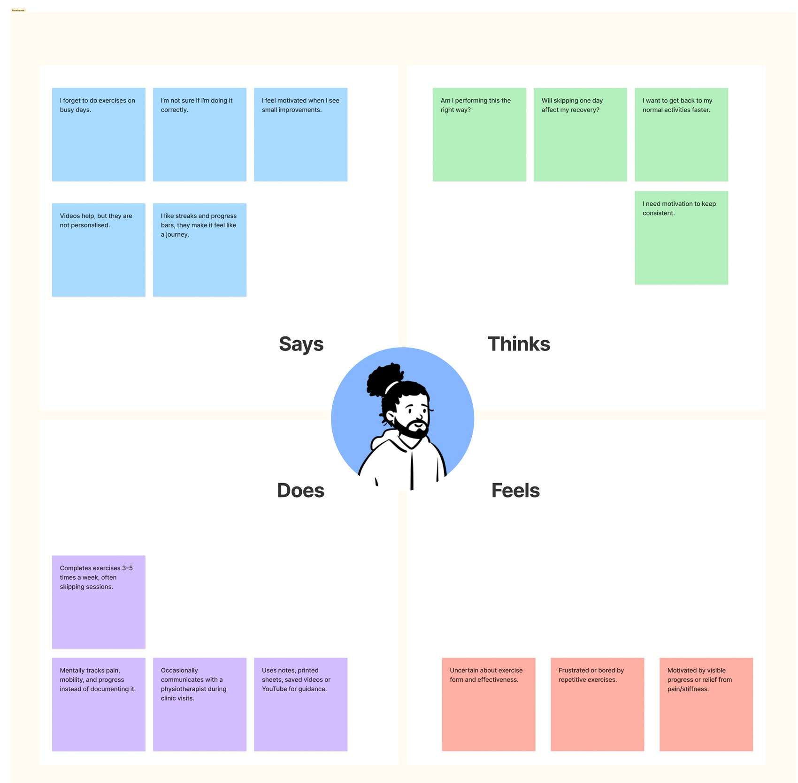
The research insights informed the creation of a user persona who embodies the feedback and perspectives of the real users we heard from. From there we mapped the journey and framed one question to design for.
Joe, 55, is recovering from a knee injury with a clinic visit every week or two and exercises at home in between. He wants to exercise correctly without constant supervision and to see clear progress over time.
In his words: “I want to do my exercises properly and see that they’re working, otherwise it’s easy to forget or give up.”
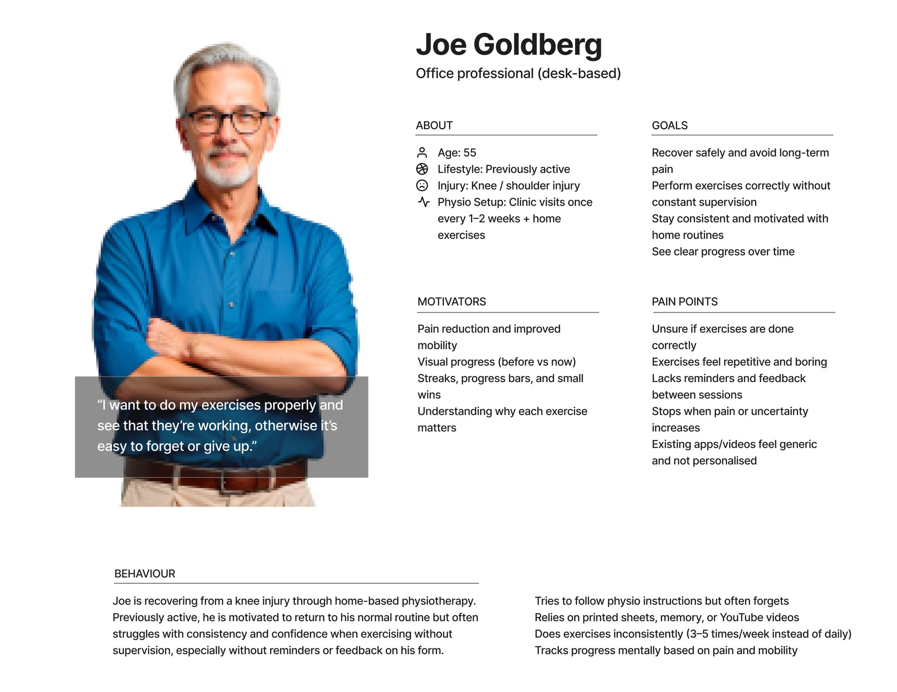
I then mapped the journey from injury to long-term recovery. Mood is lowest during the home exercise routine and the motivation drop that follows, the two stages where the patient is alone: low confidence in form, no visible progress, no accountability.
Design response: this became the stretch of the journey RegAIn concentrates on, with guided sessions, reminders and the PhyGPT assistant between appointments.
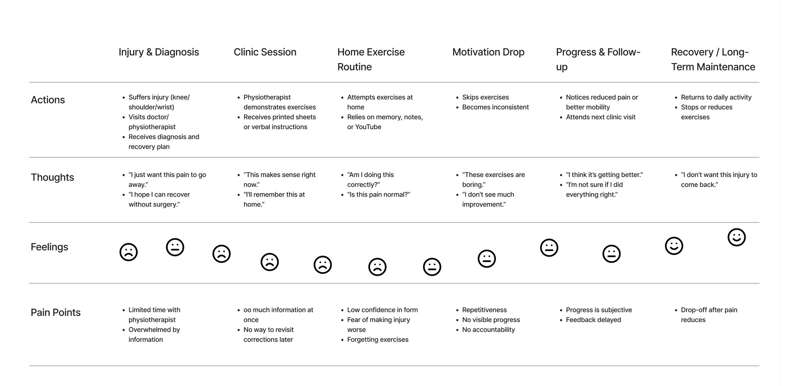
How might we help people doing physiotherapy at home stay consistent, confident and motivated, with clear guidance and real-time feedback on their form, visible and meaningful progress, and timely reminders or lightweight contact with their physiotherapist?
The app is structured around four core areas: a personalised home dashboard, a staged recovery programme, AI-guided exercise sessions with AR form tracking, and a PhyGPT assistant for on-demand support.
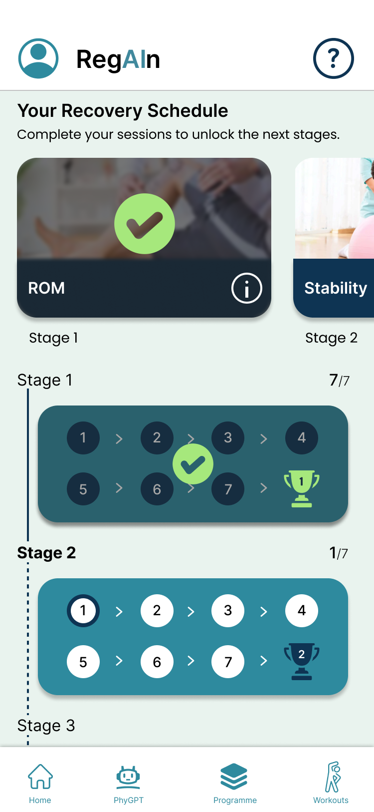
The signature feature: real-time skeleton overlay using AR tracking to detect whether the user is performing each exercise correctly. Green joints indicate correct form; amber and red flag misalignment.
The value is in the timing. Incorrect form or execution of a rehab exercise can be assessed and corrected in the moment, rather than weeks later at the next appointment. The intention behind this design choice was to support better patient outcomes and keep motivation high, in exactly the place where users had been showing a lot of uncertainty.
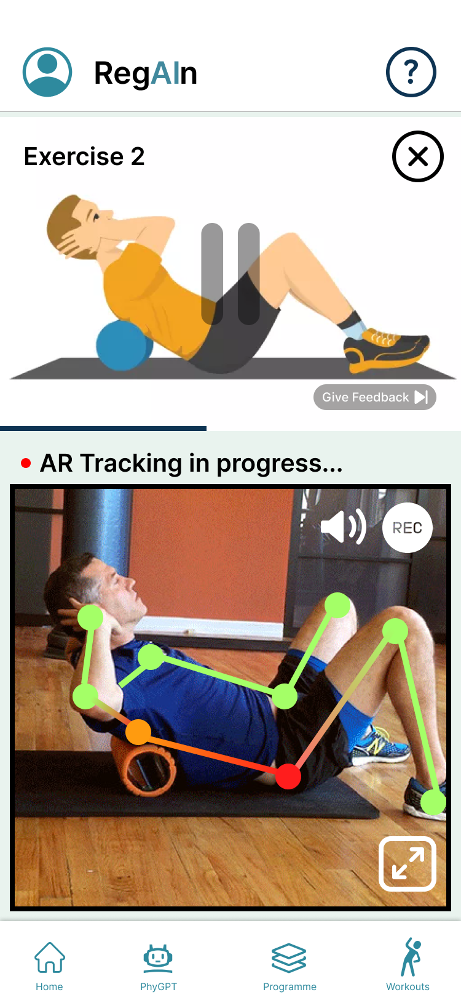
A four-step contextual onboarding sequence introduces each section of the app in situ — showing the user exactly where each feature lives before they encounter it.
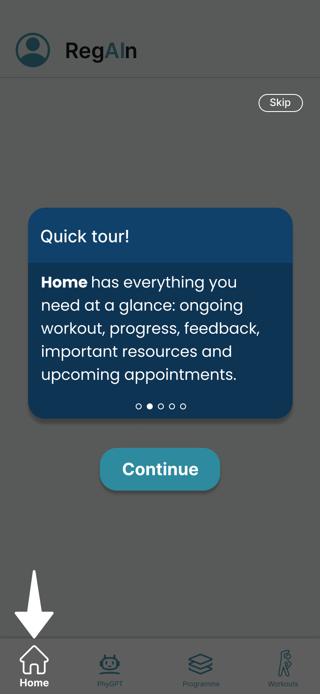
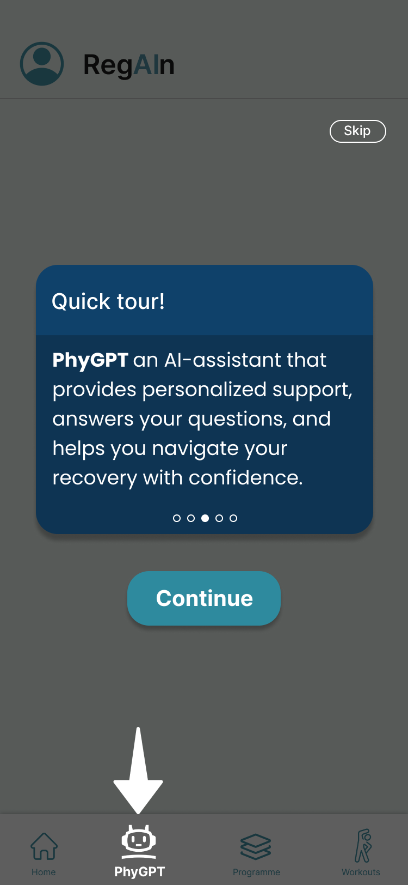
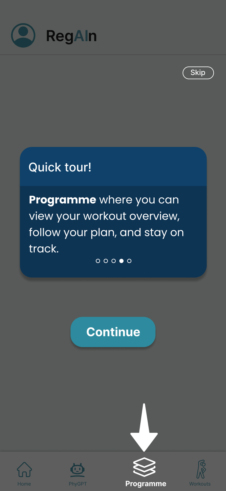
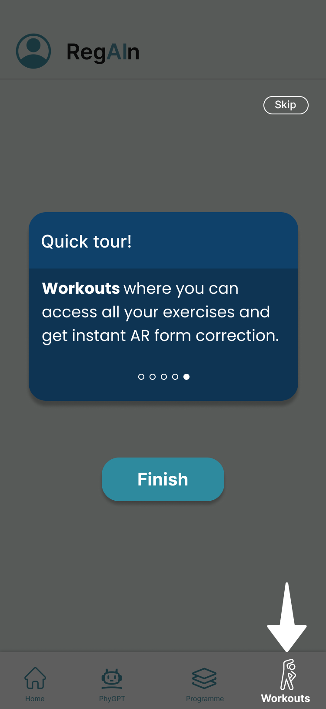
The recovery programme uses a stage-gate model — later exercises unlock only when earlier ones are completed. This mirrors the actual physiotherapy progression model and prevents patients from skipping to exercises their body isn't ready for.
It also gamifies the process. Each unlocked stage is a visual representation of progress, something users felt was lacking before. Streaks were considered too, but the negative perception of breaking a streak could impair motivation, so they were not included in the final design.
A key tension in the design was making AR feel supportive rather than clinical or judgmental. The skeleton overlay uses colour-coded joints with no scores or pass/fail labels — the user sees where form needs adjustment, not a verdict on their performance. Language throughout uses "notice" and "adjust" rather than "wrong" or "incorrect."
The AI assistant was scoped deliberately: it answers questions about the programme and exercises, but explicitly redirects users to their physiotherapist for clinical decisions. This boundary was a direct response to patient safety concerns raised during research.
After seeing the prototype, the orthopaedic surgeon I interviewed during the research invited me to support work on a live surgical aftercare platform. Their feedback was that the depth of the research stood out, and that they could see how it would transfer to the context of their product. This is at an early stage. The platform can’t be named at present, and the shape of my involvement is still being defined as the project scope is clarified.
The team ran two usability sessions on the prototype, using exemplar data rather than real patient data. The findings were documented for the next iteration rather than built into this one.
Participants hesitated to rely on AI guidance alone in the early stages of recovery. They wanted reassurance from a medical professional first, which points to a hybrid model with visible clinical oversight.
Further testing is needed to tighten the design iteratively. The primary goal for the next stage is a contained pilot with real patients, so that real user data and real usage can shape each round of changes.
In that pilot we would track adherence against the 30–70% non-completion baseline, how many patients feel very confident in their form (17% in our survey), and how much appointment time physiotherapists spend re-teaching exercises.
This was my first experience of designing as part of a team rather than solo, and the learning was as much about collaboration as it was about craft. The lesson about communicating design intent precisely — early and explicitly — has stayed with me and directly shaped how I approach handoff in subsequent projects.
The prototype was tested with exemplar data rather than real patients, so testing with actual post-operative patients is the first thing I would do next. The AR feature in particular would benefit from real-world validation — whether the skeleton overlay is genuinely legible during exercise, and whether it causes anxiety rather than confidence for certain users, are questions that deserve proper answers.